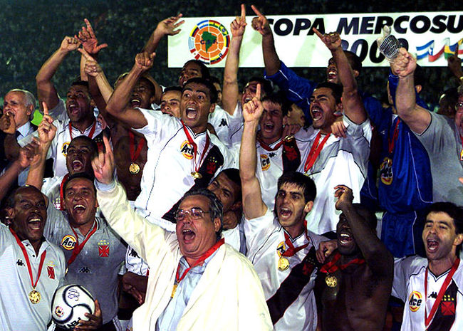
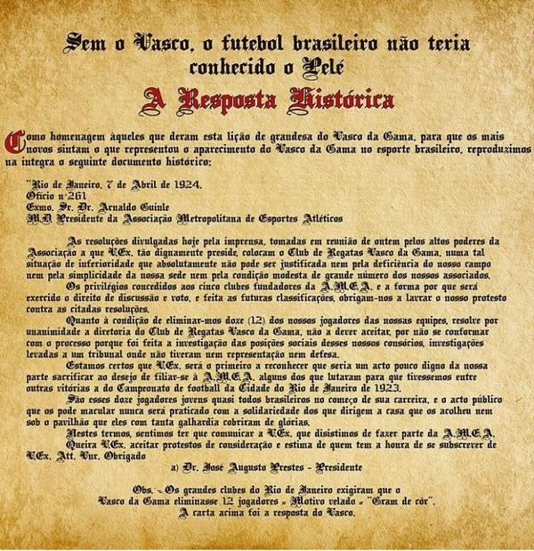

Foi no dia 20 de dezembro de 2000 que o Vasco obteve não só uma das maiores vitórias de seus 118 anos como também de toda a história do futebol mundial: após ter ido para o intervalo perdendo para o Palmeiras por 3 a 0, voltou para o segundo tempo arrasador e virou o jogo para 4 a 3, mesmo no campo do adversário e com um homem a menos. A façanha valeu ao Gigante da Colina o título da Copa Mercosul, competição que reunia as grandes equipes do continente. Em dia mais do que inspirado de Romário, responsável por 3 dos 4 gols vascaínos, o Vasco se sagrou campeão, eternizando a famosa virada do século que futuramente viria a ser tema de um livro.
Se o Vasco não foi o primeiro clube brasileiro a contar com jogadores negros em seu elenco – alguns pesquisadores defendem que a primazia foi do Bangu; outros que a Ponte Preta foi a pioneira -, não há dúvida que o Club de Regatas Vasco da Gama adotou uma atitude que contribuiu decisivamente para a inclusão de atletas negros, mulatos e demais brasileiros que não pertenciam à elite. “Ao Vasco foi negado o acesso a AMEA, sob a falsa alegação do clube não ter estádio próprio, poré, o real motivo da negativa veio a tona quando foi apresentada uma proposta indecorosa, na qual o Vasco da Gama seria admitido na referida associação desde que eliminasse do time os 12 jogadores negros, pardos, caixeiros e operários.”
Em 1923, uma equipe considerada pequena, que acabara de ser promovida a primeira divisão, conquistou o campeonato carioca. Como se isso não bastasse para provocar a ira dos aristocráticos clubes grandes, o campeão era formado por trabalhadores de origem humilde, brancos, negros e mulatos, sem dinheiro nem posição social. Este campeão era o Vasco da Gama.
Naquela época, o racismo imperava no futebol brasileiro. Em 1921, era debatido se jogadores de cor deveriam ser convocados para os importantíssimos confrontos entre a seleção brasileira e a da Argentina.
Como vingar-se do atrevimento do Vasco? Os clubes aristocratas reuniram-se e deliberaram excluir jogadores humildes, sob a alegação de que praticavam o profissionalismo.
Numa sessão realizada na sede da Liga Metropolitana, Mário Polo, o presidente do Fluminense, apresentou as condições impostas aos chamados pequenos clubes. Estes teriam que apresentar condições materiais e técnicas e eliminar de seus quadros sociais jogadores considerados profissionais, constantes de uma lista que foi lida no momento.
Finalmente usou da palavra Barbosa Junior, do S.C. Mackenzie, representante dos chamados pequenos clubes, condenando o racismo dos grandes clubes, uma vez que os jogadores atingidos eram apenas os mulatinhos rosados do Vasco, Bangu, Andaraí e São Cristóvão, sendo o Vasco o mais prejudicado de todos. Os arianos do Fluminense, Botafogo, Flamengo e América nem de leve foram tocados.
Os aplausos calorosos da enorme assistência a Barbosa Junior deixaram a Mário Polo desapontado. A confusão foi de tal ordem que a sessão foi suspensa por dez minutos, durante os quais Mário Polo e Ari Franco, o representante do Bangu, retiraram-se juntos para uma das salas onde conversaram secretamente.
Vendo seus planos irem por água abaixo, os clubes grandes decidiram que se afastariam da Liga Metropolitana, formando uma nova entidade, a Associação Metropolitana de Esportes Atléticos. Estava decretada a cisão do futebol carioca.
Mário Polo e seus comparsas calculavam que os chamados pequenos clubes ingressariam cabisbaixos e humilhados na nova entidade, submetendo-se às suas regras discriminatórias. Bangu e São Cristóvão, que possuíam jogadores atingidos pelo racismo, confirmaram as expectativas dos grandes. Os demais fatalmente seguiriam essa opção, não fora a atitude desassombrada do presidente vascaíno Dr. José Augusto Prestes e da diretoria do Vasco, enfrentando com galhardia a campanha racista, apoiado pelos outros pequenos clubes.
Um ofício assinado pelo presidente do Vasco foi enviado a Arnaldo Guinle, presidente da AMEA, declarando publicamente que negava-se a participar da nova entidade. Esse documento histórico deu origem a extinção do racismo no futebol.
 O texto a seguir é de autoria de Celso Unzelte.
Morreu na terça-feira, 1º de novembro, aos 77 anos, no Rio, Eduardo Santana, o Pai Santana, histórico pai-de-santo e massagista do Vasco, onde, entre idas e vindas, trabalhou várias vezes, de 1954 a 2006. Deixou muitas histórias, como as que conto a seguir.
Em 1970, o Vasco voltou a ser campeão carioca depois de 12 anos. E o Pai Santana foi considerado um herói da conquista, tanto quanto o goleiro Andrada ou o artilheiro Silva, os principais jogadores do time. Santana, porém, começou aquele ano trabalhando no Fluminense, e foi justamente depois de sua "atuação" em um jogo contra o Vasco que ele foi parar, de volta, em São Januário. A partida, disputada em 15 de março de 1970, valia pela Taça Guanabara, que na época era uma disputa separada do Campeonato Carioca, inclusive antecedendo o próprio estadual. O Vasco terminou o primeiro tempo ganhando por 1 a 0, gol de Tião. No intervalo, Pai Santana falou para os jogadores do Flu: — Cês tão a fim de beliscar esse jogo? Então tem que trocar as camisas. A gente tá jogando com as brancas, né? Pois é. Tem que entrar com as riscadinhas. Se a gente entrar com as riscadinhas vai ser mole. No segundo tempo, de camisas listradas, o Flu virou para 2 a 1, gols de Flávio e Wilton. Assim que souberam de quem havia sido a ideia, os cartolas vascaínos trataram de convencer o Pai Santana a trocar as Laranjeiras por São Januário, oferecendo um bom aumento no salário.
Assim, durante todo aquele Campeonato Carioca, o massagista virou manchete nos jornais: "Pai Santana já escalou o Vasco para domingo"; "Pai Santana faz sessão quarta-feira para ganhar do Mengo no Maracanã". Ganhou até um rival: Francisco Paula da Silva, o Biscoito, roupeiro do Fluminense, que garantia ter "mais força que Santana". Mas, no final, o Vasco foi mesmo campeão. E, quando foi, Santana, todo de branco, tratou de acender dúzias de velas no gramado do Maracanã, em um momento histórico, flagrado pelos fotógrafos da época. Só depois disso Santana saiu, aliviado, para comemorar o título.
No ano seguinte, 1971, Pai Santana trocou o Vasco pelo América. Sob o comando do técnico Zezé Moreira, o time melhorou muito, a ponto de ter terminado o primeiro turno em primeiro lugar no seu grupo, à frente de Flamengo e Vasco. Àquela altura do campeonato, Pai Santana resolveu "revelar": — Bom, o negócio é um novo feitiço que ando fazendo. Coisa simples. Cada jogador leva no bolso, durante toda a semana, um camarão. Se a macumba surtia efeito ou não, jamais se saberá. Mas, como escreveu Plínio Marcos sobre esse assunto em sua crônica semanal na revista Placar, "pelo menos servia para evitar a marcação homem a homem", por causa do cheiro.